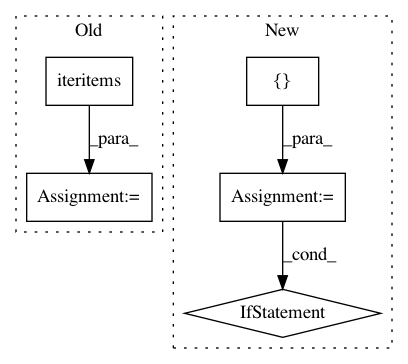

24e7ed3b8f62fd702b2fea624189f93d145ad8b5,theano/gof/fg.py,FunctionGraph,orderings,#FunctionGraph#,643
Before Change
if non_empty_ordering > 1:
// eliminate duplicate prereqs if there is more then one
// empty ordering
for (node, prereqs) in iteritems(ords):
ords[node] = list(OrderedSet(prereqs))
return ords
def check_integrity(self):
After Change
assert isinstance(self._features, list)
all_orderings = []
for feature in self._features:
if hasattr(feature, "orderings"):
orderings = feature.orderings(self)
if not isinstance(orderings, OrderedDict):
raise TypeError("Non-deterministic return value from " +
str(feature.orderings) +
". Nondeterministic object is " +
str(orderings))
if len(orderings) > 0:
all_orderings.append(orderings)
for node, prereqs in iteritems(orderings):
if not isinstance(prereqs, (list, OrderedSet)):
raise TypeError(
"prereqs must be a type with a "
"deterministic iteration order, or toposort "
" will be non-deterministic.")
if len(all_orderings) == 1:
// If there is only 1 ordering, we reuse it directly.
return all_orderings[0]
else:
// If there is more than 1 ordering, combine them.
ords = OrderedDict()
for orderings in all_orderings:
for node, prereqs in iteritems(orderings):
ords.setdefault(node, []).extend(prereqs)
return ords
def check_integrity(self):
Call this for a diagnosis if things go awry.
In pattern: SUPERPATTERN
Frequency: 3
Non-data size: 5
Instances
Project Name: Theano/Theano
Commit Name: 24e7ed3b8f62fd702b2fea624189f93d145ad8b5
Time: 2017-05-30
Author: nouiz@nouiz.org
File Name: theano/gof/fg.py
Class Name: FunctionGraph
Method Name: orderings
Project Name: nilmtk/nilmtk
Commit Name: 63ef8bfa3b63090437bd27bf1e04db7ae1eae3cf
Time: 2014-11-27
Author: jack-list@xlk.org.uk
File Name: nilmtk/stats/totalenergy.py
Class Name:
Method Name: get_total_energy
Project Name: deepchem/deepchem
Commit Name: 86328d567ff862262e0da70d0ebc9d90b407e03a
Time: 2017-11-29
Author: peastman@stanford.edu
File Name: deepchem/models/tensorgraph/tensor_graph.py
Class Name: TensorGraph
Method Name: predict_on_generator